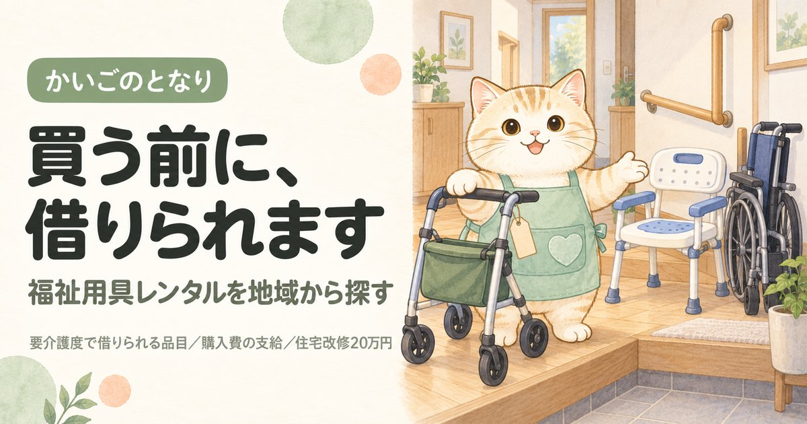

世田谷区の福祉用具一覧｜借りるか買うかで事業所が変わります

東京都世田谷区で福祉用具のレンタルや購入を考えている方へ。東京都の指定を受けた35件から35件を連絡先つきで掲載し、そのうち貸与と販売の両方を扱う事業所が34件あることまで示しました。介護保険で福祉用具を買う場合、指定を受けた事業者から買ったものにしか支給されません。同じ商品をネット通販で買っても1円も戻らないので、ここが最初の分かれ目になります。
目次
数字で見る世田谷区の福祉用具の事業所
- 区内の事業所
- 35件23区中3位（多い順）
- 65歳以上1万人あたり
- 1.8件23区中21位（多い順）
- 高齢化率
- 20.7%23区中10位（高い順）
- 要介護・要支援の認定
- 43,227人65歳以上の22.2%
事業所数は東京都福祉局の指定事業所一覧（2026年9月1日時点）、人口は住民基本台帳（2026年1月1日時点）から計算。区の統計をくわしく見る
世田谷区で福祉用具を借りる・買うとき、最初に押さえること
世田谷区には東京都の指定を受けた福祉用具の事業所が35件あります。数が多いので、価格と品ぞろえで比べる余地があります。福祉用具でいちばん多い失敗は、値段でも品ぞろえでもなく保険の出ない買い方をしてしまうことです。
①ケアマネジャー、いなければあんしんすこやかセンターに相談 → ②借りるか買うかを決める → ③世田谷区の指定事業所から選ぶ → ④買う場合は購入前に区へ申請の相談をする。
買ってから相談しても、後から支給されないことがあります。
借りられる用具と買える用具の一覧、軽度の方が使えない用具、レンタル価格の決まり方は福祉用具を地域から探すにまとめています。世田谷区に限らず共通の内容です。
世田谷区の福祉用具事業所一覧
世田谷区内の福祉用具貸与・特定福祉用具販売の指定事業所から35件を掲載しています（東京都公表・2026年9月1日時点）。区内には35件が指定を受けており、そのすべてを掲載しています。「貸与と販売」「貸与のみ」「販売のみ」の表示は、東京都の一覧でその事業所がどちらのサービス種類で指定を受けているかによります。取扱商品や価格は事業所ごとに違い、この一覧では扱っていません。掲載順は事業所の優劣を示すものではありません。
35 / 35件を表示
提供曜日の記載がない4件は、曜日で絞ると表示されません。
1株式会社トーカイ東京支店
北烏山9-25-22株式会社トーカイ
事業所番号 1370200196
2桜十字福祉用具東京事業所
八幡山3-12-21株式会社桜十字
事業所番号 1370604231
3やさしい手 住環境事業部 学芸大学営業所
下馬6-11-10株式会社やさしい手
事業所番号 1371000611
4トータルライフケア奥沢
奥沢3-45-6鈴木第一ビル1F株式会社トータルライフケア
事業所番号 1371201367
5株式会社サンハート 介楽工房
代沢4-37-2ハイツ番場A・B株式会社サンハート
事業所番号 1371202050
6株式会社 あかね
三軒茶屋2-11-20サンタワーズD棟8階
事業所番号 1371203272
7タンドル南烏山
南烏山6-4-21SJKビル2F株式会社タンドル
事業所番号 1371206598
8やすらぎライフワークス
赤堤5-13-7やすらぎケア株式会社
事業所番号 1371206895
10フランスベッド株式会社 メディカル世田谷営業所
若林4-31-15 光映ビル2Fフランスベッド株式会社
事業所番号 1371207844
11アルファフリー
鎌田3-17-1ベルフレール玉川202株式会社アルファフリー
事業所番号 1371208008
12アイ・ケアステーション
岡本1-33-14-220株式会社Ｎ・システム
事業所番号 1371208149
14セントケア りまいん 世田谷
等々力3-6-9ファニー等々力Ⅱ 202セントケアりまいん株式会社
事業所番号 1371208875
15ニック株式会社 世田谷営業所
北烏山3-25-20ニック株式会社
事業所番号 1371209048
16シルバーはあと世田谷
用賀2-33-11株式会社ベネッセキャリオス
事業所番号 1371209535
17ダスキンヘルスレント世田谷ステーション
北烏山9-23-31コンフォーレ烏山1階株式会社いつわワールド
事業所番号 1371210301
18株式会社ヤマシタ 世田谷等々力営業所
玉堤2-9-14D-one BUILDING 101号室株式会社ヤマシタ
事業所番号 1371210822
19株式会社 フロンティア 世田谷営業所
粕谷4-18-4 1階株式会社フロンティア
事業所番号 1371211226
20パナソニック エイジフリーショップ世田谷
経堂5-32-8マーベラス経堂1階日建リース工業株式会社
事業所番号 1371211895
21スマイライフ経堂 福祉用具事業所
経堂2-4-8アンティロープ経堂 B号室株式会社スマイライフ
事業所番号 1371213305
22株式会社愛安住 千歳船橋営業所
船橋1-9-16やまもとハウス2F株式会社愛安住
事業所番号 1371215722
25福祉用具ＡＩケアセンター
船橋1-13-18-202号株式会社Ｓｉｎｃｅｒｅ
事業所番号 1371216597
27株式会社ヤマシタ世田谷松原営業所
赤堤4-41-11Nビル1階株式会社ヤマシタ
事業所番号 1371217082
30イーライフ株式会社 世田谷営業所
弦巻4-11-2シェモア弦巻1FＥ－ＬＩＦＥ株式会社
事業所番号 1371217546
34ケアサポートえん
赤堤3-22-3フェリーチェ赤堤1階株式会社リレイション
事業所番号 1371303833
35グリーンメディ
松原2-42-9美鈴Nビル402号室株式会社ライフタイムメディ
事業所番号 1371506484
条件に合う事業所はありません。条件を1つ外してみてください。
上記35件は、2026-09-22に世田谷区および各事業者の公表情報で確認した内容です。営業時間・対応エリア・空き状況は変動しますので、連絡の前に必ず公式情報をご確認ください。掲載内容の訂正・削除は、お問い合わせからご依頼いただければ理由の説明なしで削除します。
掲載35事業所の内訳
世田谷区内で掲載している35事業所を、取扱い・所在地・運営法人・開設からの年数の4つの軸で集計しました。事業所ごとの詳細は上の一覧をご覧ください。
貸与と販売のどちらを扱っているか
世田谷区の掲載35件のうち、貸与と販売の両方を扱うのが34件、貸与だけが0件、販売だけが1件です。入浴用のいすやポータブルトイレは購入しかできないため、貸与だけの事業所では保険を使って買えません。両方を扱う事業所は掲載分の97%で、23区平均の90%より多く、世田谷区は買うほうの相談がしやすい区です。
| 取扱い | 件数 | 相談するときに効いてくること |
|---|---|---|
| 貸与と販売の両方 | 34件 | 借りるのも買うのも、この1社で完結する。入浴用いすやポータブルトイレも保険を使って買える |
| 販売のみ | 1件 | ポータブルトイレや入浴用いすなどの購入は頼めるが、レンタルは別の事業所を当たることになる |
所在町域
用具は自宅まで運んで組み立てるため、配送範囲は区をまたぐことが多く、所在地は絶対条件ではありません。ただし高さ調整などをあとから頼むときは近いほうが早く来ます。世田谷区内は59の町域に分かれていて、掲載分がいちばん多いのは赤堤（4件）です。
町域ごとの事業所名を見る（25町域）
| 町域 | 掲載事業所 |
|---|---|
| 船橋 | レンティケアサービス城南、株式会社愛安住 千歳船橋営業所、福祉用具ＡＩケアセンター、どうぐばこ |
| 赤堤 | やすらぎライフワークス、株式会社ヤマシタ世田谷松原営業所、関東ＭＦＲ、ケアサポートえん |
| 北烏山 | 株式会社トーカイ東京支店、ニック株式会社 世田谷営業所、ダスキンヘルスレント世田谷ステーション |
| 南烏山 | タンドル南烏山、レンタルサービス ソラスト西東京 |
| 経堂 | パナソニック エイジフリーショップ世田谷、スマイライフ経堂 福祉用具事業所 |
| 三軒茶屋 | 株式会社 あかね |
| 下馬 | やさしい手 住環境事業部 学芸大学営業所 |
| 世田谷 | こかげようぐ |
| 代沢 | 株式会社サンハート 介楽工房 |
| 八幡山 | 桜十字福祉用具東京事業所 |
| 北沢 | 保健福祉用品部 |
| 奥沢 | トータルライフケア奥沢 |
| 岡本 | アイ・ケアステーション |
| 弦巻 | イーライフ株式会社 世田谷営業所 |
| 成城 | ワークライフバランス |
| 松原 | グリーンメディ |
| 玉堤 | 株式会社ヤマシタ 世田谷等々力営業所 |
| 用賀 | シルバーはあと世田谷 |
| 砧 | アローケアクルーズ |
| 祖師谷 | きずなケア |
| 等々力 | セントケア りまいん 世田谷 |
| 粕谷 | 株式会社 フロンティア 世田谷営業所 |
| 羽根木 | ネットワーク福祉用具ステーション |
| 若林 | フランスベッド株式会社 メディカル世田谷営業所 |
| 鎌田 | アルファフリー |
運営法人の種別
掲載35件のうち営利法人が34件と最も多くなっています。福祉用具は他のサービスと違い、世田谷区でもほとんどが営利法人です。介護保険のサービスのなかでは、いちばん一般の商売に近い分野だからです。そのぶん品ぞろえと価格には差が出ます。
| 法人の種別 | 件数 | 傾向 |
|---|---|---|
| 営利法人 | 34件 | 株式会社・有限会社など。住宅街の中の小規模な事業所が多い |
| 社団・財団 | 1件 | 公益性の高い運営。地域の事情に通じているところが多い |
対応している曜日
掲載35件のうち、日曜日も対応するところが2件、土曜日まで含めると15件です。残る4件は公表データに記載がありません。退院の日に合わせてベッドを入れたいことが多く、退院が土曜なら土曜に動ける事業所でないと間に合いません。世田谷区は平日だけの事業所も少なくありません。
| 対応日 | 件数 | こんなときに |
|---|---|---|
| 日曜日も | 2件 | 週末も家族が休めない場合の受け皿 |
| 土曜日まで | 13件 | 日曜だけ別の手段が要る |
| 平日のみ | 16件 | 土日はほかと組み合わせる |
| 記載なし | 4件 | 公表データに記載なし。直接ご確認を |
開設からの年数
掲載35件のうち、指定から20年以上たっている事業所は5件、最も古い事業所は約26年前の指定です。福祉用具は在庫と配送体制がものを言う分野です。長く続いている事業所は取り扱う商品の幅が広い傾向がありますが、世田谷区でも新しい事業所のほうが新型の用具を持っていることがあります。
| 指定を受けた時期 | 件数 | 見るときの目安 |
|---|---|---|
| 直近3年以内 | 7件 | 設備が新しく、空きがあることが多い |
| 3〜10年 | 7件 | 運営が固まってきた時期。空き状況は事業所ごとに差が大きい |
| 10〜20年 | 16件 | 利用者が定着している。空きは出にくい |
| 20年以上 | 5件 | 制度の初期から続いている。地域での評判を聞きやすい |
指定年月日は東京都が公表している指定事業所一覧の値です。事業所の移転や法人変更で指定を取り直している場合があるため、実際の営業年数とは一致しないことがあります。
世田谷区の隣の区の事業所も使えます
福祉用具は自宅まで運ぶサービスで、配送範囲は区をまたぎます。世田谷区の事業所で希望の機種が見つからなければ、隣の区に頼んでかまいません。世田谷区に隣接する5区を合わせると89件あり、世田谷区内の35件と比べて選択肢が広がります。買う予定があるなら、右端の「貸与と販売」の列を見てください。
世田谷区で介護保険を使う場合の費用
世田谷区でも借りる場合は単位数が決まっていません。事業所が商品ごとに設定した価格の1〜3割が自己負担になるため、同じ介護ベッドでも値段が違います。ただし国が商品ごとに上限価格を定めており、それを超えると保険が使えません。なお世田谷区を含む23区は地域区分で1級地ですが、福祉用具の価格は商品ごとに決まるため、この区分は費用に影響しません。
| 区分 | 費用の決まり方 | 世田谷区で注意すること |
|---|---|---|
| 借りる（貸与） | 事業所が設定した月額レンタル価格の1〜3割。国が定める上限価格を超えると保険適用外 | 複数の事業所から見積もりを取る。支給限度額（区分支給限度基準額）の中に入るため、ほかのサービスの枠を圧迫します |
| 買う（特定販売） | 同一年度（4月〜翌年3月）で10万円までが対象。その1〜3割が自己負担 | 世田谷区の指定事業所から購入したものに限ります。購入前に区の介護保険担当へ相談してください |
保険を使って買えるのは腰掛便座・入浴補助用具・簡易浴槽など決められた種目だけで、それ以外は世田谷区の指定事業所から買っても対象外です。対象種目の一覧、2024年から借りるか買うかを選べるようになった品目、要支援1・2と要介護1で借りられない用具は福祉用具を地域から探すにまとめています。世田谷区に限らず共通の内容です。
世田谷区の事業所へ聞くこと
- 販売の指定も持っているか世田谷区の掲載35件のうち34件が貸与と販売の両方を扱っています。買う予定があるなら、最初にここを確認してください。
- 同じ用具で複数の機種の見積もりを出せるかレンタル価格は事業所が決めます。1機種しか出してこない事業所より、選択肢を並べてくれる事業所のほうが後で困りません。
- 納品後の調整と、故障したときの代替機ベッドの高さや手すりの位置は使い始めてから必ず直したくなります。介護ベッドが止まったときに当日中に代わりが来るかも、世田谷区内の事業所によって違います。
よくある質問
世田谷区で福祉用具を借りるには、まず何をすればいいですか？
担当のケアマネジャー、いなければあんしんすこやかセンターに相談してください。福祉用具貸与もケアプランに位置づける必要があるため、世田谷区の事業所に直接申し込むのではなくそこが入口になります。要介護認定を受けていない場合は、認定の申請から始まります。
世田谷区に福祉用具の事業所は何件ありますか？
東京都が公表している指定事業所一覧では、2026年9月1日時点で世田谷区内に35件の福祉用具の事業所（貸与または特定販売の指定を受けたもの）があります。本ページではそのうち35件を連絡先つきで掲載し、うち34件が貸与と販売の両方を扱っています。
世田谷区でポータブルトイレや入浴用のいすは、レンタルできますか？
できません。これらは購入（特定福祉用具販売）の対象で、同一年度に10万円までが保険の対象になります。世田谷区の掲載35件のうち販売の指定を持つのは35件なので、買う予定があるならその中から選んでください。
ネット通販で買っても、世田谷区から保険は出ますか？
出ません。世田谷区の掲載35件のうち35件が販売の指定を持っているので、その中から選んでください。購入前に世田谷区の介護保険担当かケアマネジャーに相談するのが確実です。
世田谷区で介護ベッドを借りたいのですが、要介護1でも借りられますか？
原則として対象外です。ただし医師の所見などをもとに例外的に認められる場合があり、判断するのは世田谷区です。世田谷区のケアマネジャー経由で相談してください。対象外になる用具の一覧は福祉用具のしくみのページにまとめています。
世田谷区でレンタル料金が事業所によって違うのはなぜですか？
福祉用具貸与だけは単位数が決まっておらず、事業所が商品ごとに価格を設定するしくみだからです。世田谷区の掲載35件は営利法人が34件と大半を占めますが、価格も品ぞろえも事業所ごとに差があるので、複数から見積もりを取ってください。
世田谷区の高齢化率は20.7%、要介護認定を受けている人は43,227人
世田谷区の人口928,666人のうち、65歳以上は192,309人（20.7%）です。23区の平均20.2%より高い水準にあたります。65歳以上のうち110,807人は75歳以上で、介護が必要になる人が増えはじめる年代です。
| 項目 | 世田谷区 |
|---|---|
| 総人口 | 928,666人 |
| 65歳以上（高齢化率） | 192,309人（20.7%） |
| うち75歳以上 | 110,807人（11.9%） |
| 第1号被保険者（65歳以上） | 194,438人 |
| 要支援1・2の認定 | 11,693人 |
| 要介護1〜5の認定 | 31,534人 |
| 認定率（認定者÷第1号被保険者） | 22.2%（23区平均21.9%） |
世田谷区で要介護・要支援の認定を受けているのは43,227人、区内の福祉用具の事業所は35件なので、1事業所あたり1235人という計算になります。認定者が全員このサービスを使うわけではないため、混み具合そのものではありません。
認定者数は第1号被保険者（65歳以上）の再掲値で、40〜64歳の方は含みません。出典はページ下部に記載しています。
世田谷区の町域一覧（対応エリアの目安）
世田谷区の町域は59。五十音では9行にわたり、最も多いのはか行の15件です。掲載事業者の対応範囲は町域単位で分かれているため、問い合わせのときは「世田谷区池尻」のように町名まで伝えてください。
- 赤堤
- 池尻
- 宇奈根
- 梅丘
- 大蔵
- 大原
- 岡本
- 奥沢
- 尾山台
- 粕谷
- 鎌田
- 上馬
- 上北沢
- 上祖師谷
- 上野毛
- 上用賀
- 北烏山
- 北沢
- 喜多見
- 砧
- 給田
- 経堂
- 駒沢
- 豪徳寺
- 桜
- 桜丘
- 桜新町
- 桜上水
- 三軒茶屋
- 下馬
- 新町
- 成城
- 瀬田
- 世田谷
- 祖師谷
- 太子堂
- 玉川
- 玉川台
- 玉川田園調布
- 玉堤
- 代沢
- 代田
- 千歳台
- 弦巻
- 等々力
- 中町
- 野毛
- 野沢
- 八幡山
- 羽根木
- 東玉川
- 深沢
- 船橋
- 松原
- 三宿
- 南烏山
- 宮坂
- 用賀
- 若林
※町域ごとの事業者ページは、掲載できる事業者が3件以上そろった町域から順次公開します。
世田谷区の他のサービスを探す
東京23区から福祉用具を探す
- 東京都福祉局「居宅サービス事業所一覧」（CC BY 4.0）
- 厚生労働省「介護サービス情報公表システム」オープンデータ（2026年6月30日時点／対応曜日・公式サイト）
- 江東区「介護保険特定福祉用具購入費の支給」（支給限度額・対象種目・指定事業者要件）
- 厚生労働省「令和6年度介護報酬改定」福祉用具貸与・特定福祉用具販売の選択制
- 世田谷区「あんしんすこやかセンター一覧」
- 日本郵便 郵便番号データにもとづく世田谷区の町域一覧
- 東京都総務局統計部「住民基本台帳による東京都の世帯と人口」（令和8年1月1日現在／年齢3区分別人口・5歳階級別人口）
- 東京都福祉局「介護保険事業状況報告（月報）」令和8年6月分（保険者別・第1号被保険者数／要介護認定者数）
最終確認日：2026-09-22／制度・料金は改定される場合があります。ご利用前に各窓口・各事業者で最新情報をご確認ください。